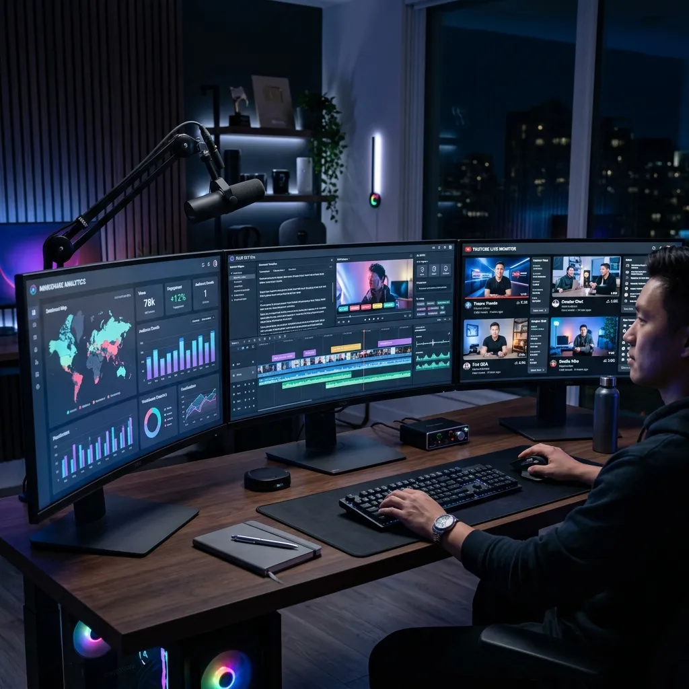

Top 5 Essential Tools for Content Creators in 2026: The Ultimate Ecosystem

The creator economy has matured into a sophisticated industry. In 2026, being a "content creator" is synonymous with being a digital entrepreneur, a media house, and a branding agency all rolled into one. To survive and thrive in this high-velocity environment, raw talent is no longer enough. You need an ecosystem of tools that allow you to produce, analyze, and monitor content at a scale that was once impossible for a single individual. In this guide, we break down the five essential tool categories that define a professional creator's workstation today.
1. AI-Driven Editing Suites: Beyond Simple Trims
In the past, video editing was the ultimate bottleneck. A 10-minute high-quality video could take 20 hours of manual labor. In 2026, AI-driven editing suites have transformed this workflow. Tools like Descript and the latest versions of Adobe Premiere Pro now allow for "semantic editing"—where you edit the video by editing the transcript.
Advanced AI features now handle:
- Automatic Color Matching: Instantly matching the look of a secondary camera to your primary 4K feed.
- Generative Fill for Video: Removing unwanted background objects or extending a frame to fit a vertical TikTok format without losing quality.
- AI Voice Cloning: Allowing creators to fix a misspoken word in post-production by typing the correct text, which is then synthesized in their own voice.
These tools don't replace the editor; they liberate them from the "grunt work," allowing more time for creative storytelling.
2. Advanced Analytics and Audience Intelligence
While YouTube Studio provides a solid foundation, professional creators in 2026 require deeper "Audience Intelligence." Tools like VidIQ and TubeBuddy have evolved into predictive engines. They don't just tell you how your last video did; they use machine learning to predict which topics will trend in the next 72 hours based on global search patterns.
Successful creators use these tools to perform "Sentiment Mapping," identifying not just what people are watching, but how it makes them feel. Understanding the emotional resonance of a thumbnail before you even film the video is the key to maintaining a high Click-Through Rate (CTR) in a saturated market.
3. Real-Time Monitoring with YoutubeMulti
A professional creator is also a professional consumer. You must know what is happening in your niche in real-time. This is where YoutubeMulti becomes an essential part of the daily routine. By setting up a multi youtube, creators can:
- Monitor Competitor Launches: Watch the latest uploads from five top competitors side-by-side to identify successful hooks and editing trends.
- Track Live Events: Monitor multiple viewpoints of a product launch, a gaming tournament, or a breaking news event to ensure your commentary is the most comprehensive.
- Audit Your Own Channels: View your experimental content alongside your "proven" winners to see if the new style stands out as intended.
Having a "Mission Control" center for your video consumption prevents you from being "the last to know" in a world that moves at the speed of a refresh button.
4. Hardware Evolution: The Rise of the Multi-Monitor Workstation
The "Laptop and a Dream" era has given way to the "Desktop and a Dashboard" reality. To manage an ecosystem of AI editors, analytics dashboards, and multi-stream monitoring, the hardware requirements have soared. The 2026 standard for a pro creator includes:
- Ultra-Wide Primary Monitor: For long-timeline editing.
- Secondary Vertical Monitors: For monitoring live chats, social media feeds, and YoutubeMulti dashboards.
- Dedicated Encoding Hardware: Using external GPUs or dedicated encoder cards to ensure that 4K streaming and editing don't cause system lag.
Investment in hardware is an investment in your "Time-to-Market." A computer that renders a video 10% faster gives you a 10% edge in being the first to cover a trending topic.
5. Security and Session Management Tools
As your channel grows, it becomes a target. Account security is a "Tool" that creators often ignore until it's too late. High-end creators now utilize hardware security keys (like Yubico) and sophisticated session management tools to protect their digital assets.
Furthermore, managing multiple brand accounts requires tools that prevent "Account Bleed"—where you accidentally post a personal update to a brand channel. Using dedicated browser profiles and account managers ensures that your professional and personal digital lives remain strictly separated.
Building a Sustainable Workflow
The danger of having so many tools is "Tool Fatigue." The most successful creators in 2026 don't use every tool; they use the *right* tools that fit into a sustainable daily workflow. We recommend starting with a core stack: One AI editor, one intelligence tool, and YoutubeMulti for your situational awareness. As you scale, you can add more specialized utilities to your arsenal.
Conclusion: Investing in Your Digital Craft
In 2026, the gap between "Amateur" and "Professional" is measured by the quality of your workflow. By equipping yourself with the tools for high-velocity editing, predictive analytics, and multiple YouTube streams monitoring, you aren't just making videos—you are building a media empire. The future belongs to the creators who treat their craft with the technical respect it deserves.